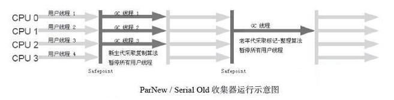

JVM知识点总结。
参考：深入理解Java虚拟机：JVM高级特性与最佳实践。
Java自动内存管理机制
JVM运行时数据区域
Java虚拟机运行时数据区如下图所示：
| 数据区域 | 是否线程私有 | 存储内容 | 抛出异常 |
|---|---|---|---|
| 程序计数器 | 私有 | 存放当前线程执行字节码指定地址(若执行Native方法，则为空Undefined)。 | 无 |
| Java虚拟机栈 | 私有 | 存放栈帧。 | StackOverflowError, OutOfMemoryError |
| 本地方法栈 | 私有 | 为Native方法服务和Java虚拟机栈类似。 | StackOverflowError, OutOfMemoryError |
| Java堆 | 共享 | 存放对象实例，数组。 | OutOfMemoryError |
| 方法区 | 共享 | 存储已被虚拟机加载的类信息、常量、静态变量、即时编译器编译后的代码等数据。 | OutOfMemoryError |
| 运行时常量池 | 共享 | 方法区的一部分，用于存放编译期生成的各种字面量和符号引用。 | OutOfMemoryError |
直接内存(Direct Memory)，不是虚拟机运行时数据区的一部分。JDK 1.4中加入了NIO(New Input/Output)类，引入了一种基于通道(Channel)与缓冲区(Buffer)的I/O方式，它可以使用Native函数库直接分配堆外内存，然后通过一个存储在Java堆中的DirectByteBuffer对象作为这块内存的应用进行操作。由于避免了在Java堆和Native堆中来回复制数据，所以能在一些场景中显著提高性能。也会有OutOfMemoryError异常。
什么是线程私有内存
由于Java虚拟机的多线程是通过线程轮流切换分配处理器执行时间的方式来实现的，在任何一个确定的时刻， 一个处理器（对于多核处理来说是一个内核）都只会执行一条线程中的指令。因此，为了线程切换后能恢复到正确的执行位置，每条线程都需要有一个独立的程序计数器，各条线程之间计数器互不影响，独立存储，我们称这类内存区域为“线程私有“的内存。
方法执行的本质：
每个方法执行的同时都会创建一个栈帧（Stack Frame）用于存储局部变量表、操作数栈、动态链接、方法出口等信息。每一个方法从调用直至自行完成的过程，就对应着一个栈帧在虚拟机栈中入栈道出栈的过程。
内存溢出和内存泄露的区别
内存溢出(Out Of Memory)，是指程序在申请内存时，没有足够的内存空间供其使用，出现out of memory；比如申请了一个integer,但给它存了long才能存下的数，那就是内存溢出。
内存泄露(Memory Leak)，是指程序在申请内存后，无法释放已申请的内存空间，一次内存泄露危害可以忽略，但内存泄露堆积后果很严重，无论多少内存,迟早会被占光。
memory leak会最终会导致out of memory！
String.inter() 是一个Native方法，作用是：如果字符串常量池中已经包含一个等于此String对象的字符串，则返回代表池中这个字符串的String对象，否则，将此String对象包含的字符串添加到常量池中，并且返回此String对象的引用
Hotspot虚拟机中的对象
对象创建过程
对象创建过程，new指令底层发生了什么：首先检查这个指令的参数在常量池中能否定位到一个类的引用，并检查这个类是否被加载、解析和初始化过，如果没有则加载类，然后给对象分配内存，然后初始化对象如对象头信息
检查类是否加载 -> 给对象分配内存 -> 对对象进行初始化设置
对象分配内存方法：
- 指针碰撞：空闲内存连续分布，分配内存只需移动指针，通常使用Serial、ParNew等带Compact过程的收集器。
- 空闲列表：空闲内存不连续分布，系统维护一个空闲内存列表，通常使用CMS这种基于Mark-Sweep算法的收集器。
对象的内存布局
对象的内存分为3部分：对象头(Header)、实例数据(Instance Data)和对齐填充(Padding)
对象头分两部分：对象运行时数据和类型指针
对象的访问定位
- 通过具柄访问对象

- 通过直接指针访问

垃圾收集器与内存分配策略
垃圾收集器所关注的是Java堆和方法区这部分共享内存。
判断对象是否已死的方法
1.引用计数法
给对象中添加一个引用计数器，每当有一个地方引用它时，计数器值就加1，当引用失效时，计数器值就减1，任何时刻计数器为0的对象就是不可能在被使用的。
优点：实现简单，判定效果高。
缺点：无法解决对象之间相互循环引用的问题。
2.可达性分析算法
Java、C#中都使用可达性分析算法判断对象是否存活。

通过一系列成为“GC Root”的对象作为起始点，从这些节点开始向下搜索，搜索走过的路径成为引用链(Reference Chain)，当一个对象到GC Roots没有任何引引用链时，证明此对象时不可用的。
可以作为GC Root的对象包括下面几种：
- 虚拟机栈（栈帧中的本地变量表）中引用的对象。
- 方法区中类静态属性引用的对象。
- 方法区中常量引用的对象。
- 本地方法栈中Native方法引用的对象。
对象在进行可达性分析后还至少要进行两次标记才会被最终判定为死亡。
4种引用类型
| 引用类型 | 含义 | 被引用对象何时被回收 |
|---|---|---|
| 强引用 | 代码中普遍使用的引用，如Object obj = new Object() | 永远不会被回收 |
| 软引用 | 描述一些有用但并非必须的对象 | 在系统将要发生内存溢出异常之前回收 |
| 弱引用 | 描述非必须对象，强度比软引用更弱 | 对象只能生存在下次GC之前 |
| 虚引用 | 不会对对象生存时间构成影响，唯一目的是在对象被回收时收到一个系统通知 | 不一定 |
回收方法区(永久代)
方法区也就是永久代的回收，主要回收两部分内容：废弃常量和无用的类。
常量池中的常量如果没有对象引用它，就会被回收。
无用类的判定：
- 该类所有实例都已被回收。
- 该类的ClassLoader已被回收。
- 该类的Class对象没有在任何地方被引用。
垃圾收集算法
标记-清除算法(Mark-Sweep)
先标记所有需要回收的对象，在标记完成后统一回收所有被标记的对象。
每个对象判定死亡之少要进行两次标记，可达性分析后没有引用链的对象会被第一次标记，第一次标记后系统会判断对象是否需要执行finalize()方法，如果需要执行finalize()方法，对象会被放入一个F-Queue队列，系统调用一个低优先级的线程执行F-Queue队列中的finalize()方法，如果对象在finalize()方法中重新获得引用链就可复活，稍后系统会执行第二次标记，被第二次标记的对象就会被回收。
两点不足：
- 标记和清除的效率不高。
- 标记清楚后会产生大量不连续的内存碎片，分配大对象时找不到连续内存空间可能提前触发下一次垃圾回收。

复制算法(Copying)
将内存划分为大小相等的两块，每次使用其中一块，当一块内存用完了要进行垃圾回收时，将存活的对象复制到另一块内存上，然后把已经使用过的内存一次清理掉。
优点：每次对半块内存进行回收，不用考虑内存碎片的问题，实现简单高效。
缺点：将内存缩小为了原来的一半。

现代虚拟机都采用这种算法来回收新生代（Java堆）。IBM公司研究表明98%的对象都是“朝生夕死”，所以将Java堆按照8 : 1 : 1的比例分为Eden空间和两块小的Servivor空间，每次使用Eden和其中一块Servivor。
当回收时，将Eden和Servivor中还存活的对象复制到另一块Servivor空间上，最后清理掉Eden和刚才用过的Survivor空间。
由于我们不能保证每次存活的对象都不多鱼内存的10%，所以当Survivor空间不够用时，需要依赖老年代进行分配担保(Handle Promotion)，既如果另外一块Survivor空间没有足够空间存放上一次新生代手机下来的存活对象时，这些对象将直接通过分配担保机制进入老年代。
标记-整理算法(Mark-Compart)
应用在老年代，标记所有需要回收的对象，然后让所有存活的对象都向一端移动，然后直接清理掉端边界以外的内存。

分代收集算法(Generational Collection)
当前商业虚拟机都采用分代手机算法。将Java堆内存分为新生代和老年代，方法区为永久代。新生代中对象存活率低，所以选用复制算法对新生代进行垃圾收集，只需要付出少量存货对象的复制成本就可以完成收集。老年代中对象存活率高，没有额外空间对它进行分配担保，就必须使用标记清理或者标记整理算法来回收。
Eden : Survivor : Survivor = 8 : 1 : 1
Eden + 2*Servivor : Old = 1 : 3 或 3 : 8

当我们第一次new出一个对象的时候，特别大的对象，直接放在老年代(Old)，其他的普通对象，放在新生代(Eden)。
在经过一次GC（垃圾回收）之后，Eden中还存活（有引⽤用指向）的对象，就会跑到Survivor1中去。又经过一次GC，Eden中存活的+Survivor1中的对象，都复制到Survivor2中，再经过一次GC，Eden中存活的+Survivor2中的对象，都复制到Survivor1中。
如果经过多次垃圾回收之后，Survivor中一直存在某个对象，就把这个对象放进老年代中去。
补充说明：
新生代GC（Minor GC）：指发生在新生代的垃圾收集，由于Java对象大多朝生夕死，所以Minor GC非常频繁，一般回收速度也快。
老年代GC（Major GC / Full GC）：指发生在老年代的GC，出现Full GC经常会伴随至少一次Minor GC，Full GC速度一般会比Minor GC慢10倍以上。
垃圾收集器
Serial收集器
一个单线程新生代收集器，使用复制算法，在垃圾收集时必须暂停其他所有工作线程“Stop The World”，直到它收集结束。是虚拟机运行在Client模式下的默认新生代收集器。
优点：单线程简单高效。
缺点：收集时会有停顿。

ParNew收集器
Serial收集器的多线程版本，除了使用多线程，其余和Serial完全一样。是运行在Server模式下的虚拟机中首选的新生代收集器。
除了Serial收集器外，目前只有它能与CMS收集器(老年代收集器)配合工作。

补充说明：
并行（Parallel）：指多条垃圾收集线程并行工作，但此时用户线程仍然处于等待状态。
并发（Concurrent）：指用户线程与垃圾收集线程同时执行（但不一定是并行的，可能会交替执行），用户程序在继续运行，而垃圾收集程序运行与另一个CUP上。
Parallel Scavenge收集器
一个新生代并行多线程收集器，使用复制算法，也叫吞吐量优先收集器。Parallel Scavenge收集器的目标是让垃圾收集的时间占用总的CPU时间最少，既达到最大的吞吐量。
CMS收集器的目标是尽可能缩短垃圾收集时用户线程停顿的时间。CMS更适合用在与用户交互的程序中，Parallel Scavenge更适合用在后台运算的程序中。
Parallel Scavenge收集器提供了两个参数控制吞吐量：
- -XX:MaxGCPauseMillis : 最大垃圾收集时间。
- -XX:GCTimeRatio : 吞吐量大小。
使用Parallel Scavenge收集器的可以通过**-XX:UseAdaptiveSizePolicy**开启GC自适应调节策略，将内存调优任务交给虚拟机去完成。
Serial Old收集器
Serial的老年代版本，单线程收集器，使用标记-整理算法，主要意义是给Client模式下的虚拟机使用，如果在Server模式下它还有两大用途：
- 在JDK 1.5之前的版本中与Parallel Scavenge收集器搭配使用。
- 作为CMS收集器的后备方案。
Parallel Old收集器
Parallel Scavenge收集器的老年代版本，使用多线程和标记-整理算法。
CMS收集器
CMS(Concurrent Mark Sweep)是一种以获取最短回收停顿时间为目标的老年代收集器。CMS非常适合用于互联网站或者B/S系统服务器上，这类应用重视服务响应速度，希望系统停顿时间最短，以给用户带来较好的体验。
CMS收集器基于标记-清除算法，它的运作过程更复杂一点，分为4个步骤：
- 初始标记（CMS initial mark）
- 并发标记（CMS concurrent mark)
- 重新标记（CMS remark）
- 并发清除（CMS concurrent sweep）
初始标记、重新标记两个步骤需要”Stop The World“，初始标记仅仅标记GC Root直接关联对象，速度很快。
并发标记阶段要进行可达性分析，耗时最长。
重新标记是为了修正并发标记期间用户对标记对象做的更改，耗时比初始标记长但远比并发标记短。
由于整个过程中耗时最长的并发标记和并发清除过程收集器线程都与用户线程并发工作，所以从总体上来看，CMS收集器的回收过程是与用户线程并发执行的。
CMS收集器的缺点：
- 对CPU资源敏感
- 无法收集浮动垃圾（在标记过程中出现的垃圾）
- 由于基于标记-清除算法，收集结束后会有大量空间碎片。
G1收集器
G1（Garbage-First）一款面向服务端应用的垃圾收集器，整体基于标记-整理算法，局部基于复制算法。不许要和其他收集器配合就能独立管理整个GC堆。有如下特点：
- 并行并发
- 分代收集
- 空间整理
- 可预测的停顿
G1将整个Java堆灰粉为多个大小相等的独立区域（Region），虽然还保留有新生代和老年代的概念，但新生代和老年代不再是物理隔离的了，他们都是一部分Region（不需要连续）的集合。
G1收集器之所以能建立可预测的停顿时间模型，是因为它有计划地避免在整个Java堆中进行全区域的垃圾收集。G1跟踪各个Region里面的垃圾堆积的价值大小（回收所获的空间大小，回收所需的时间经验），在后台维护一个优先列表，每次根据允许的收集时间，优先回收价值最大的Region（所谓Garbage-First）.
G1收集器运作大致可划分为以下几个步骤：
- 初始标记（Initial Marking）
- 并发标记（Cxoncurrent Marking）
- 最终标记（Final Marking）
- 筛选回收（Live Data Counting and Evacuation）

垃圾收集器总结
| 垃圾收集器 | 收集区域 | 收集算法 | 特点 |
|---|---|---|---|
| Serial | 新生代 | 复制 | 单线程，简单高效，收集时停顿大，Client模式下的默认收集器。 |
| ParNew | 新生代 | 复制 | Serial的多线程版本，可以和CMS配合使用。 |
| Parallel Scavenge | 新生代 | 复制 | 多线程，吞吐量优先收集器。Server模式下默认收集器。 |
| Serial Old | 老年代 | 标记-整理 | 单线程，Client模式下默认收集器。 |
| Parallel Old | 老年代 | 标记-整理 | 多线程，和Parallel Scavenge搭配使用。Server模式默认收集器。 |
| CMS | 老年代 | 复杂版标记-清除 | 多线程，最短回收停顿收集器，对CPU资源敏感，无法收集标记过程中产生的垃圾，会产生空间碎片。 |
| G1 | 所有 | 标记-整理+复制 | 多线程，分代收集，空间整理，可预测停顿。 |
垃圾收集器参数总结

内存分配与回收策略
Java中的自动内存管理最终可以归结为自动化地解决两个问题：
1. 给对象分配内存。
2. 回收分配给对象的内存。
大体来讲对象主要分配在新生代的Eden区上，如果启动了本地线程分配缓冲，将按线程优先在TLAB上分配，少数情况下也有可能直接分配在老年代中。
普遍内存分配规则：
1. 对象优先在Eden分配
大多数情况下，对象在新生代Eden区中分配，当Eden区没有狗狗空间进行分配时，虚拟机将发起一次 Minor GC。
2. 大对象直接进入老年代
大对象指需要大量连续内存空间的Java对象，比如很长的字符串或者数组，大对象对虚拟机来说是个坏消息，经常出现大对象容易导致内存还有不少空间时就提前触发垃圾收集以获取足够的连续空间来安置他们。
-XX:PretenureSizeThreshold指定对象大于这个值的时候直接在老年代分配。
3. 长期存活的对象将进入老年代
JVM会给每个对象定义一个对象年龄（Age）计数器，如果对象在Eden出生并经过第一次Minor GC后存活，并被移动到Survivor空间，那么对象年龄设为1，对象在Survivor中每熬过一次Minor GC，年龄就加1，当年龄增长到一定程度（默认为15岁），就将会被晋升到老年代中，对象晋升年龄的阀值通过-XX:MaxTenuringThreshold设置。
4. 动态对象年龄判定
如果在Survivor空间中相同年龄的对象占用空间的的总和大于Survivor空间的一半，年龄大于或等于该年龄的对象就可以直接进入老年代，无序等到MaxTenuringThreshold中要求的年龄。
5. 空间分配担保
在发生Minoc GC 之前。虚拟机会先检查老年代最大可用的连结空间是否大于新生代所有对象总大小或者历次晋升的平均大小，只要大于就会进行MinorGC，否则将进行Full GC。
虚拟机性能监控与故障处理工具
JDK的命令行工具
jps：虚拟机进程状况工具

VMID(Virtual Machine Identifier)和LVMID(Local Virtual Machine Identifier)如果是本地虚拟机进程，两者是一样的，如果是远程虚拟机进程，VMID的格式应当是：
[protocol:][//]lvim[@hostname[:port]/servername]
jstat：虚拟机统计信息监视工具
jstat [option vmid [interval[s|ms] [count]]]
例：需要每250毫秒查询一次进程2764垃圾收集状况，一共查询20次，命令应当是：
jstat -gc 2764 250 20
option选项如下所示：
jinfo：Java配置信息工具
作用是实时查看和调整虚拟机各项参数。
jinfo [optioin] pid
jinfo -v : 查看虚拟机启动时显式指定的参数列表。
jinfo -flag : 查看参数的系统默认值
jmap：Java内存映像工具
用于生成堆转存快照（一般叫heapdump或dump文件）。
jhat：虚拟机堆转储快照分析工具
jstack：Java堆栈跟踪工具
用于生成虚拟机当前时刻的线程快照（一般称为threaddump或者javacore文件）。
HSDIS：JIT生成代码反汇编
JDK的可视化工具
JConsole：Java监视与管理控制台
VisualVM：多合一故障处理工具
调优案例分析与实战
案例：高性能硬件上的程序部署策略
在高性能硬件上部署程序目前主要有两种方式：
- 通过64位JDK使用大内存。
- 使用若干个32位虚拟机建立逻辑集群来利用硬件资源。
通过64位JDK使用大内存
使用大内存就是造成一个问题：Full GC的时间特别长。
如果部署的是面向用户的应用，要使用这种方法部署应用就必须保证程序中Full GC的频率控制的足够低，要想降低程序Full GC的频率，就要确保老年代的空间比较稳定，要确保老年代的空间总是够用，就要确保程序中不会出现很多大对象，不会有很多年龄大的对象，尤其不能用成批的、长生存时间的大对象产生，这就要求我们在代码上进行优化。
使用若干个32位虚拟机建立逻辑集群来利用硬件资源
可以在一台物理机器上启动多个服务器进程，每个服务器进程分配不同端口，在前端搭建一个反向代理服务器，实现负载均衡。
这种方法可能会遇到下面一些问题：
- 资源竞争，如磁盘竞争。
- 很难高效利用某些资源，由于进群环境中很多东西都是重复的。
- 32位系统内存限制最高4GB。
- 大量使用本地缓存的应用，会造成大量内存浪费。
案例：集群间同步导致的内存溢出
在当前网络情况无法满足集群间同步消息的传输要求时，重发数据在内存中不断积累，就会产生内存溢出。
案例：堆外内存导致的溢出错误
如果系统中用到了NIO的话，NIO操作会使用到Direct Memory内存。垃圾收集时，虚拟机虽然也会对Direct Memory进行回收，但是Direct Memory不能像新生代、老年代那用发现空间不足了就通知收集器进行垃圾回收，它只能等待Full GC时，随便帮它清理垃圾，否则就只能抛出内存溢出异常。
从时间经验的角度出发，处理Java堆和永久代（方法区）之外，下面这些区域也会占用较多的内存，所有的内存总和收到操作系统进程最大内存的限制。
- Direct Memory：可通过
-XX:MaxDirectMemorySize调整大小，内存不足时抛出OutOfMemoryError或者OutOfMemoryError:Direct buffer memory。 - 线程堆栈：可通过-Xss调整大小，内存不足时抛出StackOverFlowError（纵向无法分配，既无法分配新的栈帧）或者OutOfMemoryError: Unable to create new native thread（横向无法分配，既无法建立新的线程）。
- Socket缓存区：每个Socket连接都 Receive 和 Send 两个缓存区，分别占大约37KB和25KB内存，连接太多无法分配时会抛出：IOException: Too many open files异常。
- JNI代码：如果代码中使用JNI调用本地库，那本地库使用的内存也不在堆中。
- 虚拟机和GC：虚拟机、GC的代码执行也要消耗一定的内存。
案例：外部命令导致系统缓慢
fork系统调用是Linux用来产生新进程的。
如果每个用户请求的处理都需要执行一个外部shell脚本来获得一些系统信息，这个shell脚本通过java的Runtime.getRuntime().exec()方法来调用，这种调用是非常消耗资源的操作，JVM执行这个命令的过程是：先克隆一个和当前虚拟机拥有一样环境变量的进程，再用这个新的进程区执行外部命令，最后再推出这个进程，如果频繁执行这个操作，CPU和内存的消耗就会很大。
建议使用Java自带API获取这些系统信息。
案例：服务器JVM进程崩溃
JVM进程崩溃适应位调用外部OA系统的不可用接口，又使用异步调用方式，由于积累了越来越多的Web服务没有调用完成，导致在等待的线程和Socke连接越来越多，最终超过虚拟机的承受能力后虚拟机进程崩溃。
解决方法：通知OA门户修复无法使用的继承接口，并将异步调用改为生产者/消费者模式的消息队列实现。
案例：不恰当数据结构导致内存占用过大
使用HashMap<Long, Long>结构来存储数据文件空间效率太低。
案例：由Windows虚拟内存导致的长时间停顿
GUI程序最小化的时候工作内存会被系统交换到虚拟内存中，会导致不正常的GC停顿。可以加入参数-Dsun.awt.keepWorkingSetOnMinimize=true来解决。
虚拟机执行子系统
各种不同平台的虚拟机于所有平台都统一使用的程序存储格式——字节码（ByteCode）是构成平台无关性的基石。
Java虚拟机不和包括Java在内的任何语言绑定，它只与“Class文件”这种特定的二进制文件格式所关联，Class文件中包含了Java虚拟机指令集和符号表以及若干其他辅助信息。
Class类文件的结构
Class文件格式采用一种类似于C语言结构体的伪结构来存储数据，这种伪结构中只有两种数据结构：无符号数和表。
- 无符号数：数据基本数据类型，以u1、u2、u4、u8来分别代表1个字节、2个字节、4个字节和8个字节的无符号数，无符号数可以用来描述数字、索引引用、数量值或者按照UTF-8编码构成字符串值。
- 表：由多个无符号数或者其他表作为数据项构成的复合数据类型，所有表都习惯性地以“_info”结尾，表用于描述有层次关系的复合结构的数据，整个Class文件本质上就是一张表。

无论是符号数还是表，当需要描述同一类型但数量不定的多个数据时，经常会使用一个前置的容量计数器加若干个连续的数据项的形式，这时称这一系列连续的某一类型的数据为某一类型的集合。
magic 魔数
每个Class文件的头4个字节称为魔数（Magic Number），确定这个文件是否位一个能被虚拟机接收的Class文件。
Class文件魔数：0xCAFEBABE
minor_version 次版本号
major_version 主版本号
constant_pool_count, constant_pool 常量池
常量池是Class文件中的资源仓库，是与其他项目关联最多、占用空间最大的数据项之一，是Class文件中第一个出现的表类型数据项目。
常量池中存放两大类常量：字面量（Literal）、符号引用（Symbolic References）
字面量是Java程序中的字符串，final常量等。
符号引用包含下面三类常量：
- 类和接口的全限定名（Fully Qualified Name）
- 字段的名称和描述符（Descriptor）
- 方法的名称和描述符
Java代码在编译时，不会有”连接“这一步，而是在虚拟机加载Class文件的时候进行动态连接。
类全名：com.xinxing.MyClass。
类的全限定名：将类全名中的”.“替换成”/"，如com/xinxing/MyClass。多个全限定名之间需要加";"分隔。
简单名称：没有类型和参数修饰的方法或者字段名称。
access_flags 类访问标志
用于识别一些类或者接口层次的访问信息，包括：
- 这个Class是类还是接口。
- 是否定义为public类型。
- 是否定义为abstract类型。
- 如果是类，是否声明为final。
具体标志如下：

this_class 类索引
指定类的全限定名。
super_class 父类索引
指定父类全限定名。
interfaces_count, interfaces 接口索引集合
描述这个类实现了哪些接口。
fields_count, fields 字段表集合
描述接口或类中声明的变量。

methods_count, methods 方法表集合

方法里的Java代码，经过编译器编译生成字节码指令，存放在方法属性表集合的一个名为“Code”的属性里。
attributes_count, attributes 属性表集合
Class文件、字段表、方法表都可以携带自己的属性表结合，用于描述某些场景专有信息。
虚拟机类加载机制
虚拟机把描述类的数据从Class文件加载到内存，并对数据进行校验、转换解析和初始化，最终形成可以被虚拟机直接使用的Java类型，类型的加载、连接和初始化过程都是在程序运行期间完成的。
类加载的时机
类的生命周期如下图所示：

加载、验证、准备、初始化和卸载这5个阶段的开始顺序是确定的。解析阶段有可能在初始化之后才开始，这是为了支持Java的运行时绑定（动态绑定）。
初始化开始时机有且仅有下面这5种情况：
- 遇到new, getstatic, putstatic, invokestatic这4个字节码指令时。
- 使用java.lang.reflect包的方法对类进行反射调用时。
- 初始化子类时，如果发现父类还没有被初始化，则要先初始化父类。
- 虚拟机启动时，用户需要指定一个要执行的主类（包含mian()方法的那个类），虚拟机会先初始化主类。
- 使用JDK1.7动态语言支持时，如果一个java.lang.invoke.MethodHandle实例最后的解析结果REF_GetStatic, REF_putStatic, REF_invokeStatic的方法句柄，这个方法对应的类没有被初始化时要进行初始化。
这5种情况称为对一个类进行主动引用。除此之外所有引用类的方式都不会触发初始化，称为被动引用。
下面时3个备用引用的例子：
例1: 通过子类引用父类的静态字段，不会导致子类初始化。
1 | public class SuperClass { |
只会输出：“SuperClass init!”
例2：通过数组定义类应用类，不会触发此类的初始化
1 | public class NotInitialization { |
运行后没有输出“SuperClass init!“
例3：常量在编译阶段会存入调用类的常量池中，本质上并没有引用到定义常量的类，因此不会触发定义常量的类的初始化。
1 | public class ConstClass { |
没有输出“ConstClass init”，因为在编译阶段通过常量的传播优化，已经将常量的值"hello world"存储到了NotInitialization类的常量池中。以后对该常量的引用就转换成NotInitialization类对自身常量池的引用了。
一个类在初始化时，要求其父类全部都已经初始化过了，但是一个接口在初始化时，并不要求其父接口全部都完成了初始化，只有在真正使用到父接口的时候（如引用接口中定义的常量）才会初始化。
类加载的过程
加载 => 验证 => 准备 => 解析 => 初始化
加载 Loading
加载阶段虚拟机需要完成3件事：
- 通过一个类的全限定名来获取定义此类的二进制字节流。
- 将这个字节流所代表的静态存储结构转化为方法区的运行时数据结构。
- 在内存中生成一个代表这个类的java.lang.Class对象，作为方法区这个类的各种数据的访问入口。
对于非数组类的加载可以使用系统提供的引导类加载器来完成，也可以通过重写类加载器的loadClass()方法用自定义类加载器去完成。
数组类本身不通过类加载器创建，它是有Java虚拟机直接创建的。但数组中的元素类型最终是要靠类加载器去创建，一个数组类的创建过程遵循以下规则：
- 如果数组的元素类型是引用类型，如String[]，就递归的使用该类型的类加载器去加载，并且在该加载器的命名空间上表示该数组。
- 如果数组元素类型是普通类型，如int[]，Java虚拟机将会把数组标记为与引导类加载器关联。
- 数组类的可见性与元素类型的可见性一致，如果数组是普通类型，那么可见性默认为public。
验证 Verification
是连接阶段的第一步，目的是为了确保Class文件的字节流中包含的信息符合当前虚拟机的要求，并且不会危害虚拟机自身的安全。
验证阶段会完成4个检验动作：
- 文件格式验证。
- 元数据验证。
- 字节码验证。
- 符号引用验证。
准备 Preparation
准备阶段是正式为类变量（被sattic修饰的变量）分配内存并设置类变量初始值的阶段，这些变量都将在方法区分配内存。
- 这时候分配内存的只有static变量，实例变量将在对象实例化时睡着对象一起分配在Java堆中。
- 初始值时类型零值。

注意：static final变量会在准备阶段就被设置为指定值
1 | public static final int value = 123; //value准备阶段就是123。 |
解析 Resolution
虚拟机将常量池内的符号引用替换为直接引用的过程。
符号引用（Symbolic References）：用一组符号来描述所引用的目标，可以是任何形式的字面量，只要使用时能无歧义地定位到目标即可。
直接引用（Direct References）：可以是直接指向目标的指针，相对偏移量，或一个能间接定位到目标的句柄。
解析动作主要针对类或接口、字段、类方法、接口方法、方法类型、方法句柄和调用点限定符7类符号引用进行。
初始化 Initialization
初始化阶段是执行类构造器<clinit>()方法的过程。
<clinit>()方法特点：
-
<clinit>()方法是由编译器自动收集类中的所有类变量赋值动作和静态语句块中的语句合并产生的，编译器收集的顺序是由语句在源文件中出现的顺序所决定的， 静态语句块中只能访问到定义在静在语句块之前的变量，定义在它之后的变量，在前面的静态语句块可以赋值，但是不能访问。 -
<clinit>()方法与类的构造函数（或者说实例构造器<init>()方法）不同，它不需要显式地调用父类构造器， 虚拟机会保证在子类的的<clinit>()方法执行之前，父类的<clinit>()方法已经执行完毕．因此在虚拟机中第一个被执行的<clinit>()方法的类肯定是java.lang.Object。 -
由于父类的
<clinit>()方法先执行，也就意味着父类中定义的静态语句块要先于子类的变量赋值操作。1
2
3
4
5
6
7
8
9
10
11
12static class Parent {
public static int A = 1;
static {
A = 2;
}
}
static class Sub extends Parent {
public static int B = A;
}
public static void main(Stringp[] args) {
System.out.println(Sub.B);
}B的值将会是2不是1.
-
<clinit>()方法对于类和接口不是必须的，如果一个类中没有静态语句块，也没有对变量的复制操作，那么编译器可以不为这个类生成<clinit>()方法。 -
接口中不能使用静态语句块，但仍有变量初始化的赋值操作，因此接口与类一样都会生成
<clinit>()方法。但接口与类不同的是，执行接口的<clinit>()方法不需要先执行父接口的<clinit>()方法，只有当父接口中定义的变量使用时，父接口才会初始化。另外，接口的实现类在初始化时也一样不会执行接口的<clinit>()方法。 -
虚拟机会保证一个类的
<clinit>()方法在多线程环境中被正确地加锁，同步，如果多个线程通化市区初始化一个类，那么只有一个线程区执行这个类的<clinit>()方法，其他线程都需要阻塞等待，直到活动线程执行<clinit>()方法完毕。如果一个类的<clinit>()方法中有好事很长的操作，就可能造成多个线程阻塞。
类加载器
类与类加载器
类加载器用来获取描述此类的二进制字节流。类加载器完成加载过程中的第一步。
每一个类加载器都有一个独立的类名称空间，比较两个类是否相等，只有在这两个类是有同一个类加载器加载的前题下吃啊有意义，否则，即使这两个类来由于同一个Class文件，被同一个虚拟机加载，只要加载他们的类加载器不同，那这两个类就必定不相等。
双亲委派模型
从Java程序员的角度来看有3种不同的类加载器：
- 启动类加载器（Bootstrap ClassLoader）：使用C++语言实现，是虚拟机自身的一部分。这个类加载器负责将存放在
<JAVA_HOME>\lib目录中的，或者被-Xbootchlasspath参数所指定的路径中的，并且可以被虚拟机识别的类库加载到虚拟机内存中。启动类加载器无法被Java程序直接引用，用户在编写自定义类加载器时，如果需要吧加载器请求委派给引导类加载器，那直接使用null代替即可。 - 扩展类加载器（Extension ClassLoader）：由sum.misc.Launcher$ExtClassLoader实现，负责加载
<JAVA_HOME>\lib\ext目录中的，或者被java.ext.dirs系统变量所指定的路径中的所有类库，开发者可以直接使用该加载器。 - 应用程序类加载器（Application ClassLoader）：又叫系统类加载器，是ClassLoader中的getSystemClassLoader()方法的返回值。由sum.misc.Launcher$AppClassLoader实现。负责加载用户类路径（ClassPath）上所指定的类库，开发者可以直接使用该加载器，如果没有自定义加载器，它既是程序中的默认加载器。
这些加载器的关系如下图所示：

双亲委派模型的工作过程是：如果一个加载器收到了类加载的请求，它首先不会自己去尝试加载这个类，而是吧这个请求委派给父类加载器去完成，每一个层次的类加载器都是如此，因此所有的加载请求最终都应该传送到顶层的启动类加载器中，只有当副加载器反馈自己无法完成这个加载请求（它的搜索范围中没有找打所需的类）时，子加载器才会尝试自己去加载。
双亲委派模型的好处：Java类随着它的类加载器一同具备了一种带有优先级的层次关系。如java.lang.Object类，存放在rt.jar中，所有加载器加载Object类的时候都会委派给启动类加载器加载，因此Object类在程序的各种类加载器环境中都是同一个类。如果没有双亲委派模型，各个类执行加载的话，系统中将出现多个不同的Object类，Java类型体系中最基础的行为也就无法保证，应用程序将会变得一团乱。
虚拟机字节码执行引擎
运行时栈帧结构
栈帧（Stack Frame）是用于支持虚拟机进行方法调用和方法执行的数据结构，它是虚拟机运行时数据区中的虚拟机栈（Virtual Machine Stack）的栈元素。栈帧存储了方法的：
- 局部变量表
- 操作数栈
- 动态连接
- 方法返回地址
每一个方法从调用开始至执行完成的过程，都对应着一个栈帧在虚拟机栈里从入栈到出栈的过程。
对于执行引擎来说，在活动线程中，只有位于栈顶的栈帧才是有效的，成为当前栈帧（Current Stack Frame），与这个栈帧关联的方法称为当前方法（Current Method），执行引擎运行的所有字节码指令都只针对当前栈帧进行操作，栈帧结构如下图所示：

局部变量表 Local Variable Table
存放方法参数和方法内部定义的局部变量。局部变量表的容量以变量槽（Variable Slot）为最小单位，一个Solt占用32为内存空间。
操作数栈 Operand Stack
是一个后五险处（Last In First Out，LIFO）栈。操作数栈的每一个元素可以是任意Java数据类型，包括long和double，32位数据占用1个容量，64位数据占用2个容量。
在方法刚开始执行的时候操作数栈是空的，在方法执行过程中，会有各种字节码指令往操作数栈中写入和提取内容，既出栈/入栈操作。
动态连接 Dynamic Linking
每个栈帧都包含一个指向运行时常量池中该栈帧所属方法的应用，持有这个引用是为了支持方法调用过程中的动态链接。
- 静态解析：常量池中一部分方法的符号引用在类加载阶段或者第一次使用的时候就转化为直接引用，这种转化成为静态解析。
- 动态连接：另一部分将在每一次运行期间转化为直接引用，这部分称为动态连接。
方法返回地址
两种方法退出方式：
- 正常完成出口（Normal Method Invocation Completion）：执行引擎遇到方法返回的字节码指令退出方法。
- 异常完成出口（Abrupt Method Invocation Completion）：方法在执行过程中遇到异常，并且在方法体内没有解决异常，导致的方法退出。
方法退出的过程实际上就等同于把当前栈帧出栈。因此退出是可能执行的操作有：恢复上层方法的局部变量表和操作数栈，把返回值雅茹调用者栈帧的操作数栈中，调整PC计数器的值指向方法调用指令后面一条指令等。
附加信息
一些规范之外的信息。如调试信息。
栈帧信息 = 动态连接 + 方法返回地址 + 其他附加信息
方法调用
方法调用阶段的唯一任务是确定被调用方法的版本。
解析 Resolution
方法在程序运行前就已经确定，并在在运行期间不可改变。调用这类方法称为解析。
满足编译器可知，运行期不可变的方法主要包括静态方法和私有方法两大类。
非虚方法：编译器可知，运行期不可变的方法包括静态方法，私有方法，实例构造器，父类方法4类。
与非虚方法对应的是虚方法。
分派 Dispatch
1.静态分派
所有依赖静态类型来定位方法执行版本的分派动作称为静态分派。静态分派的典型应用是方法重载。静态分派发生在编译阶段，因此确定静态分派的动作实际上不是有虚拟机来执行的（是由Javac编译器来执行的）。
1 | public class StaticDispatch { |
Human称为变量的静态类型（Static Type）或叫外观类型（Apparent Type）。
Man称为变量的实际类型（Actual Type）。
静态类型是在编译期可知的，而实际类型的在运行期才能被确定，编译期在编译程序的时候并不知道一个对象的实际类型是什么。
编译器在重载时是通过参数的静态类型而不是实际类型作为判定依据的，并且静态类型是编译器可知的，所以在编译阶段，Javac编译器就会根据参数的静态类型决定了使用哪个版本的重载。
所以上面代码选择了sayHello(Human)作为调用目标，并把这个方法的符号引用写到main()方法里的两条invokevirtual指令的参数中。
2.动态分派
在运行期间根据实际类型确定方法执行版本的分派过程称为动态分派。
1 | public class DynamicDispatch { |
上面main方法中sayHello()方法调用代码翻译成字节码指令后如下所示：
1 | 16:aload_1 |
对应代码中的：
1 | Human man = new Man(); |
16, 20两句分别把刚刚创建的两个对象的引用压到栈顶，这两个对象是将要执行的sayHello()的所有者，称为接收者（Receiver）。
invokevirtual指令的多态查找过程：
- 找到操作数栈顶的第一个元素所指向的对象的实际类型，记作C。
- 如果在类型C中找到与常量中的描述符和简单名称都相符的方法，则进行访问权限校验，如果通过则返回这个方法的直接引用，查找过程结束；如果不通过，则返回java.lang.IllegalAccessError异常。
- 否则，按照继承关系从下往上依次对C的各个父类进行第2步的搜索和验证过程。
- 如果始终没有找到合适的方法，则抛出java.lang.AbstrctMethodError异常。
由于invokevirtual指令执行的第一步就是在运行期确定接受者的实际类型，所以两次调用中的invokevirtual指令把常量池中的类方法符号引用解析到了不同的直接引用上，这个过程就是Java语言中方法重写的本质。
3.单分派与多分派
方法的宗量 = 方法的接受者 + 方法的参数
单分派：根据一个宗量对目标方法进行选择。
多分派：根据多于一个宗量对目标方法进行选择。
1 | public class Dispatch { |
在编译阶段，静态分派时，选择目标方法的依据由两点：
- 静态类型时Father还是Son。
- 方法参数时QQ还是360。
因为根据两个宗量进行选择，所以Java语言的静态分派属于多分派类型。
静态分派的产物是两个invokevirtual指令，两条指定的参数分别为常量池中指向Father.harChoice(360)和Father.harChoice(QQ)方法的符号引用。
运行阶段，动态分派时，在执行son.hardChoic(new QQ())语句编译出的invokevirtual指令时，由于编译期间已经决定目标方法的签名必须为hardChoice(QQ)，这时唯一影响虚拟机选择的宗量只有方法的接受者的实际类型时Father还是Son，因为只有一个宗量作为选择依据，所以Java语言的动态分派属于单分派类型。
Java是一门静态多分派、动态单分派的语言。
4.虚拟机动态分派的实现
由于动态分派是非常频繁的动作，而且动态分派需要在类的方法的元数据中搜索合适的目标方法，因此虚拟机中最常用的稳定优化手段就是为类在方法区中建立一个虚方法表，使用虚方法表索引来代替元数据查找以提高性能。

虚方法表中存放着各个方法的实际入口地址。如果某个方法在子类中没有被重写，那子类的虚方法表里面的地址入口就是父类方法实现的地址入口。如果子类重写了这个方法，子类方法表中的地址将会替换为指向子类实现版本的入口地址。
上图中Son重写了来自Father的全部方法，因此Son方法表没有志向Father类型数据的箭头。但是Son和Father都没有重写Object的方法，所以他们的方法表中所有从Object继承来的方法都指向了Object的数据类型。
方法表在类加载的连接阶段进行初始化。
程序编译与代码优化
早期（编译期）优化
Java语言的编译器可能有三种：
- 前端编译器：把
*.java文件转换为*.class文件。前端编译器有：Sun的Javac、Eclipse JDT中的增量式编译器（ECJ）。 - 后端运行期编译器（JIT编译器，Just In Time Compiler）：把字节码转变成机器码。JIT编译器有：HotSpot VM的C1、C2编译器。
- 静态提前编译器（AOT编译器，Ahead Of Time Compiler）：直接把
*.java文件编译成本地机器代码。AOT编译器有：GNU Compiler for the Java (GCJ)、Excelsior JET。
Javac这类前端编译器对代码的运行效率几乎没有任何优化措施，虚拟机设计团队把对性能的优化集中到了后端的JIT编译器中，这样可以让那些不是由Javac产生的Class文件也同样能享受到编译器优化所带来的好处。但是很多新生的Java语法特性是依靠编译器的“语法糖”来实现，而不是依靠虚拟机的底层改进来支持，
可以说，Java中JIT编译器在运行期的优化过程对于程序运行来说更重要，而前端Javac编译器在编译期的优化过程对于程序编码来说关系更加密切。
Javac编译器
Javac编译过程大致可以分为3个过程：
- 解析与填充符号表过程。
- 插入式注解处理器的注解处理过程。
- 分析与字节码生成过程。
这3个步骤之间的关系与交互顺序如下所示：
Javac编译过程的主体代码如下图所示：

整个编译最关键的处理就由图中标注的8个方法来完成。
晚期（运行期）优化
在本分商用虚拟机（Sun HotSpot、IBM J9）中，Java程序最初是用过解释器（Interpreter）进行解释执行的，当虚拟机发现某个方法或代码块的运行特别频繁时，就回吧这些代码认定为“热点代码”（Hot Spot Code）。为了提高热点代码的执行效率，在运行时，虚拟机将会把这些代码编译成与本地平台相关的机器码，并进行各种层次的优化，完成这个任务的编译器称为即时编译器（JIT编译器，Just In Time Compiler）。
虽然Java虚拟机规范中没有规定Java虚拟机内必须要有急事编译器存在，但是，JIT编译器编译性能的好坏、代码优化程度的高低却是衡量一款商用虚拟机优秀与否的最关键指标之一。
常用JVM指令总结
| 指令 | 含义 |
|---|---|
| -XX:MaxPermSize | 指定方法区最大内存 |
| -XX:PermSize | 指定方法区默认大小 |
| -Xms | 指定堆内存初始空间，如-Xms20m |
| -Xmx | 指定堆内存最大空间，如-Xmx20m |
| -Xmn | 指定新生代大小 |
| -Xss | 指定栈容量大小。如-Xss123k |
| -XX:MaxDirectMemorySize=10 | 指定直接内存空间为10MB |
| -XX:+/-UseTLAB | 指定是否使用本地线程分配缓存 |
| -XX:+HeapDumpOnOutOfMemoryError | 让虚拟机在出现内存溢出异常时 Dump 出当前内存堆转储快照 |
| -XX:SurvivorRatio | Survivor占用空间比例=Eden/Survivor |
| -XX:PretenureSizeThreshold | 占用连续内存空间大于这个值的对象直接在老年代中分配。 |
| -XX:MaxTenuringThreshold | 对象晋升老年代年龄阀值 |
| -XX:+PrintTenuringDistribution | 打印对象年龄分布 |
| -XX:HandlePromotionFailure | 是否允许担保失败 |
| -XX:UseConcMarkSweepGC | 使用CMS收集器 |
| -XX:+UseParNewGC | 使用ParNew收集器 |
| -XX:ParallelGCThreads | 限制垃圾收集的线程数 |
| -XX:MaxGCPauseMillis | 最大垃圾收集停顿时间。 |
| -XX:GCTimeRatio | 吞吐量 |
| -XX:UseAdaptiveSizePolicy | 使用GC自适应调节策略，Parallel Scavenge收集器参数 |
| -XX:+PrintGCDetails | 发生GC时打印内存收集日志 |
| -XX:+PrintFlagsFinal | 查看虚拟机参数默认值0 |
| -Xint | 禁止编译器运作 |
| -XX:+DisableExplicitGC | 屏蔽System.gc() |
| -XX:+TraceClassLoading | 跟踪类加载 |
| -Xbootclasspath | 设置启动类路径 |